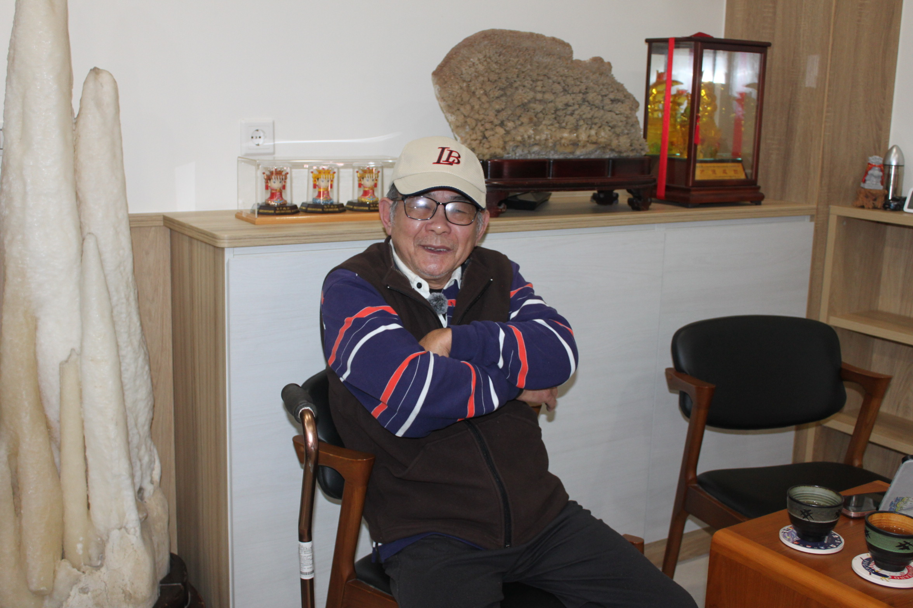
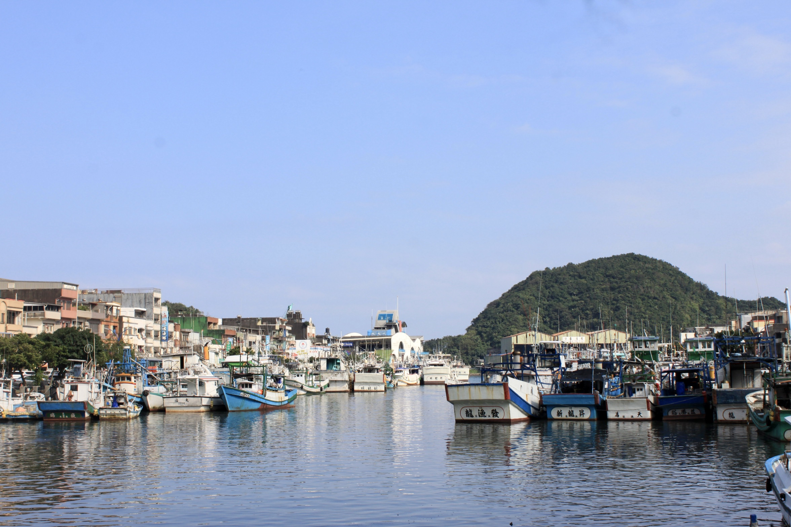

從小琉球到南方澳的人生起點
蔡樹木，1951年出生於小琉球，這座面積不大的離島，長年以捕魚為主要生計，因土地貧瘠、資源有限，許多家庭世代以討海為業，不少男孩在小學畢業後便跟著父執輩出海，提早投入勞動。戰後至1960年代，隨著南方澳漁業發展迅速、工作機會增加，不少小琉球人陸續移往當地發展，形成穩定的移民群體，也逐漸成為南方澳漁業的重要勞動力來源。
蔡樹木的成長歷程，正是在這樣的時代背景下展開。六歲那年，他跟隨父親第一次來到南方澳，夏天在這裡捕魚、冬天再回小琉球。由於南方澳鄰近黑潮流經海域，夏秋漁汛豐富，吸引許多小琉球漁民北上作業；到了冬季，東北季風增強、海象不穩，部分漁民便返回南部生活。那段時間，他一年有一半在南方澳讀書，另一半回小琉球生活，過著如候鳥般隨漁汛遷徙的日子，直到國小四年級才正式在南方澳定居下來。
這樣往返兩地的生活，讓他很早就習慣海上的節奏，也逐漸走上與父親相同的道路。
他說。這句話，決定了他的人生方向，對他來說，當漁民不是一種選擇，而是一種延續家庭責任的方式。國中畢業後，他沒有繼續升學，而是直接投入漁業工作。與同齡人不同，他的青春是在船艙與海浪之間度過。
當時南方澳正值漁業興盛時期。1960到1970年代，港口最多曾停靠上千艘漁船，凌晨的魚市場燈火通明，戲院、冰果室與海產店林立，甚至有「馬達一響，黃金萬兩」的說法，形容漁業帶來的繁榮。

船長：在變動時代中的掌舵者
隨著台灣漁業發展，南方澳逐漸從近海漁業轉向遠洋漁業。所謂遠洋漁業，是指漁船離開台灣沿近海，到太平洋、印度洋等公海海域長時間作業，航程往往長達數月。船上除了捕魚設備，也必須準備大量燃油、冷凍設備與生活物資，因此遠洋漁船通常規模較大，人員編制也更多。
隨著台灣漁業發展，南方澳在1960年代達到高峰，漁船數量增加，也吸引大量外來人口。然而近年來，隨著漁業環境改變與勞動力短缺，船上人員組成也出現明顯轉變。蔡樹木回憶，在他擔任船長時，一艘三十多人的遠洋漁船上，往往只有他一個台灣人，其餘多為來自印尼、菲律賓或中國的外籍漁工。語言不同、文化差異，使得管理變得更加複雜。
他說。對他而言，維持船上的穩定，不只是技術問題，更是人際關係的經營。
另一方面，捕魚方式也出現明顯改變。早期漁民主要依靠經驗判斷海流、風向與魚群位置，例如觀察水色或洋流方向來決定航線；現在則多依賴聲納、衛星定位等設備，提升捕撈效率，也降低風險。
蔡樹木說。他提到，過去有時一網下去便能捕獲大量魚群，但現在即使設備進步，也不一定能有好收穫。除了過度捕撈導致漁業資源減少，國際漁業法規近年也越來越嚴格，各國對特定魚種、捕撈配額與作業區域都有明確限制，遠洋漁船在公海作業時必須遵守相關規範。對許多老漁民而言，大海已經不像過去那樣「肯拚就有魚」。

與大海對峙的那些時刻
遠洋漁業的風險，遠比一般人想像來得高。
蔡樹木一生中曾三度在海上遇到颱風，其中一次距離颱風眼僅約三十五公里。當時強風扯斷繩索，海浪不斷拍打船身，整艘船在海上劇烈搖晃。船員情緒崩潰，有人甚至落淚。他回憶當時透過衛星電話向老闆報告時說：「這次，我不確定撐不撐得過去了。」在那樣的情況下，船長仍必須保持冷靜，持續判斷方向與尋求應對方式，一肩扛下整艘船的命運。
除了天氣風險，海上作業本身也充滿危險。他曾遇過他與漁工在作業時被鯊魚咬傷，兩人皆傷勢嚴重，但距離返港還需要十天。當時船上醫療資源有限，只能進行簡單處理，並持續航行。
「船長，我可能回不去了。」傷者對他說。蔡樹木抬頭看天，只回了一句：「看天吧。」那是一種無奈，也是一種在極端環境下的現實。雖然他自己也深受重傷，但仍將有限的止痛藥留給傷勢更重的漁工。等到回到港口就醫時，醫生對他的傷勢感到十分驚訝。
談到討海生活，他這樣說。在狹小的船艙裡一待就是半年，每天睡眠不固定，還得長時間搬運漁具、處理漁獲、輪班工作，還需面對風險與不確定性。對他而言，每一分收入，都是長時間勞動與承擔風險換來的。
回到岸上的人生
六十歲那年，蔡樹木因兩度中風選擇退休，結束長達數十年的海上生涯。剛離開漁船的那幾年，他一度難以適應，但也清楚身體已經無法再負荷這樣的工作。
他也親眼見證南方澳的轉變。過去漁港周邊十分熱鬧，曾有三間電影院，是漁民休息時的重要娛樂場所。如今，隨著人口外移與產業變化，昔日的繁華已逐漸消失。除了環境的改變，他也記掛著那些曾一起工作的外籍漁工。有些人在疫情後回到家鄉，從此失去聯繫。「他們對我很好。」他說。那些一起經歷風浪的日子，成為他記憶中難以取代的一部分。
現在的他，仍會回到南方澳港邊走走，看著新式漁船進出港口，也看看海的變化。被問到是否想念出海，他笑著說：「妄想妄想啦。」語氣中帶著一點無奈，也帶著接受。
他坦白地說。這份工作需要長時間離家，也伴隨高度風險。但面對漁業人力逐漸減少的現況，他仍歡迎願意投入的人，「現在設備很好，如果真的有興趣可以學，但沒耐心、沒興趣的人，千萬不要來。」
談到與海的關係時，他想了一下，只說：「我覺得我跟海很熟。」
對他而言，大海不只是工作場所，而是陪伴他一輩子的存在。即使已經離開船上生活，那段與海共處的歲月，仍深深留在他的日常之中。
← 返回專題列表